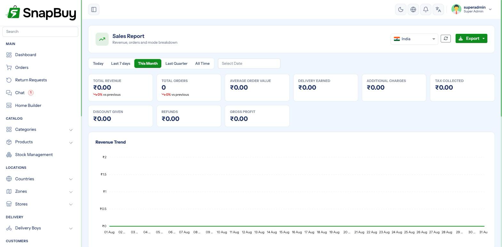

Reports
Menu path: Reports
Ten reports covering sales, operations and customers.

The ten reports
| Report | Answers |
|---|---|
| Sales | What am I selling, and for how much, over time? |
| Orders | How many orders, at what value, in what status? |
| Products | Which products sell, and which do not? |
| Category | Which categories carry the business? |
| Customers | Who buys, how often, and how much? |
| Inventory | What stock do I hold, and where? |
| Returns | What comes back, and why? |
| Delivery | How are riders and delivery performing? |
| Payment | Which payment methods are used, and what succeeds? |
| Promo | Are discount campaigns working? |
Reading them well
Compare periods, not just totals
A single month's revenue tells you almost nothing on its own. The same month against the previous one, or against the same month last year, tells you whether the business is growing. Every report supports a date range — use two.
Sales and Orders
Sales shows revenue; Orders shows volume and status mix.
A high cancellation rate is a symptom, not a statistic
Cancellations concentrated in one zone usually mean delivery charges are wrong or the area is unserviceable. Concentrated at Payment Pending, they usually mean a payment gateway problem — see Payment Gateways before blaming customers.
Products and Category
Look at the bottom of the product report, not just the top
The products that never sell are costing you stock capital, shelf space and catalogue clutter. The slow-moving tail is usually a bigger opportunity than the bestsellers, which are already working.
Inventory
Stock on hand, by store.
Inventory is per store
A product can be out of stock at one outlet and plentiful at another. The customer only ever sees the stock of the store serving their zone, so a healthy total across all stores can still mean "unavailable" for most customers.
Delivery
Rider and delivery performance.
Cross-check against cash collection
A rider with strong delivery numbers but persistently unsettled COD cash is a reconciliation problem, not a performance success. Read this alongside Wallet & Settlements.
Payment
Methods used and success rates.
A falling success rate on one gateway needs immediate attention
Payment failures are silent lost revenue — the customer rarely tells you, they just leave. A sudden drop usually means expired credentials, an account issue at the provider, or a mode/currency mismatch. Check Payment Gateways.
Promo
Measure promo codes against margin, not revenue
A discount code will almost always increase order volume. The question is whether the extra orders covered the discount given, and whether they went to customers who would have bought anyway. Revenue alone flatters every campaign.
Returns
Returns clustered on one product are a product problem
A single item appearing repeatedly in the returns report usually means the listing is misleading — wrong size guidance, a photograph that does not match, or an inaccurate description. Fixing the listing is cheaper than processing the returns.
Timezone and currency
Report periods are evaluated against the country's timezone, and amounts in its currency.
A wrong country timezone shifts every daily figure
Orders land in the wrong day, so daily comparisons and "best hour" analysis are quietly wrong. If your figures look shifted by a few hours, check the timezone before anything else.
Access
Reports expose commercial data
Revenue, margin, customer value and purchase prices are all visible here. Grant the report permission narrowly — and remember that granting list only, with no update rights, is the right shape for an accountant or analyst. See Roles & Permissions.
Exports
Reports can be exported for use in a spreadsheet.
An exported report leaves your access controls behind
Once downloaded, a file containing customer details and revenue can be forwarded anywhere. Treat exports as sensitive documents, and be deliberate about who can produce them.
Troubleshooting
| Symptom | Cause | Fix |
|---|---|---|
| Report empty | Date range has no data, or filters too narrow | Widen the range |
| Figures shifted by hours | Country timezone wrong | Fix it on the country |
| Totals disagree with the gateway | Missing webhook, some payments unrecorded | See Payment Gateways |
| Inventory looks wrong | Reading totals across stores | Filter by store |
| Export times out | Range too large | Export in smaller periods |
| Staff cannot open reports | report permission not granted | Grant list in that category |